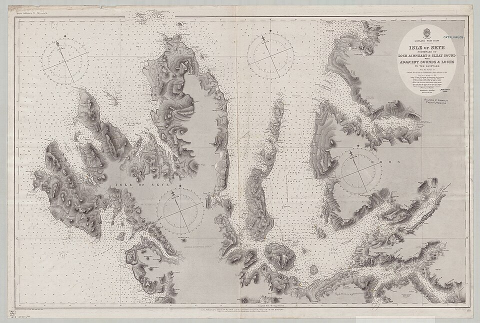
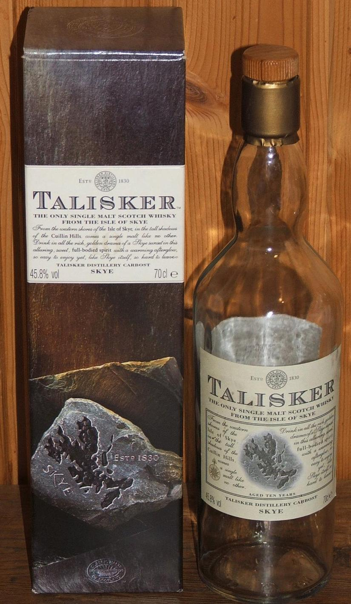
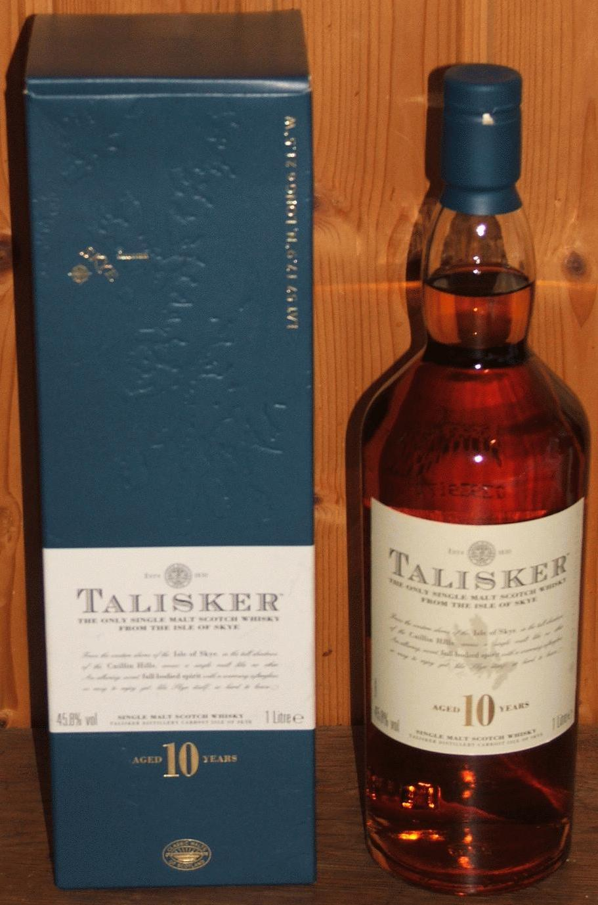
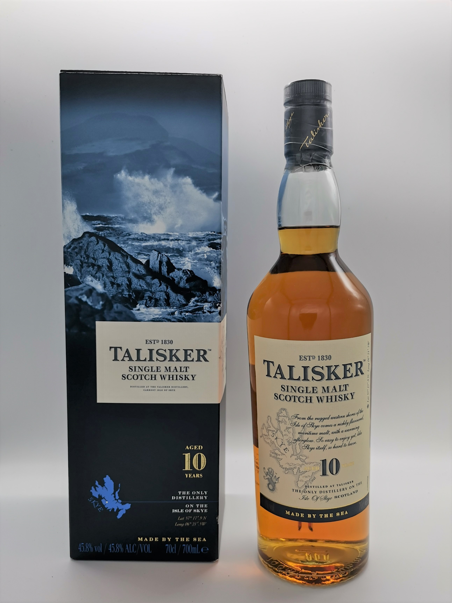

talisker · 10
Talisker has been distilled on the Isle of Skye since 1830 — the oldest operational distillery on the island.
The 10-year-old expression has appeared under six distinct label designs since its introduction as a founding
Classic Malt in 1988. Era dates are approximate, derived from collector bottle codes and auction records
rather than official Diageo documentation.
no label photo found
00
~1982–1988
Pre-Classic Malts
DCL / Ascot Malt Cellar
- Talisker 8yo under DCL
- "Golden Spirit of Skye" tagline
- No "Classic Malts" badge
- 2-icon back label format
- LLHA0000xxx bottle codes
- 1-litre bottles available
45.8% abv · extremely rare

no label photo found
01
1988–~2000
Classic Malts Map Label
Founding Classic Malt
- Cartographic Isle of Skye map on front
- "Classic Malts of Scotland" badge
- "Golden Spirit of Skye" tagline
- Brown bottle glass; presentation box
- 3-icon back label (vs. 2-icon pre-launch)
- Two sub-versions: early vs. late 1990s
45.8% abv · most sought-after

02
~2001–~2005
Standing Stone
Grey Label · Grey Box
- Grey label and grey box
- Isle of Skye standing stones motif
- "10 Years — The Classic Malts"
- L15R / L15T bottle code prefix
- Transitional era; limited documentation
- Rare in collector circulation
45.8% abv · rare

03
~2005–~2012
Blue / Cream · First Edition
CM000 Codes · Plain Blue Box
- Blue and cream color scheme
- Plain blue presentation box
- Centered "10" numeral on label
- "Only distillery on Skye" introduced
- LxxxxCM000 bottle code format
- L5245CM000 (Sep 2005) — L2107CM000 (Apr 2012)
45.8% abv

04
~2012–2021
Blue / Cream · Made by the Sea
Waves Artwork Box
- Rocky coastline / waves artwork on box
- Artist's signature inside box lid
- "10" numeral shifted to label right
- Isle of Skye drawing on label left
- "Made by the Sea" campaign (launched 2017)
- L3092CM000 (2013) — L5224CM000 (2015)
45.8% abv

05
2021–present
Orange / Sustainable
Current Label
- Orange trim replaces blue
- Die-cut label traces the Skye coastline
- Wooden stopper replaces plastic
- "Oldest distillery on the Isle of Skye"
- 86% reduction in plastic components
- Torabhaig Distillery opened on Skye (2021)
45.8% abv · current release
// sources: whiskybase · caledonian collectables · master of malt · diving for pearls
// images: era 0 · Talisker Distillery © Repsol (CC BY-SA 2.0) · era 1 · Admiralty Chart No. 2551, 1878 (public domain) · era 2 · bottle © Benutzer:Urs (CC BY-SA 3.0) · era 3 · bottle © Benutzer:Urs (CC BY-SA 3.0) · era 4 · bottle © Keeezawa (CC BY-SA 4.0) · era 5 · bottle © Datenralfi (CC BY-SA 4.0) · all via Wikimedia Commons